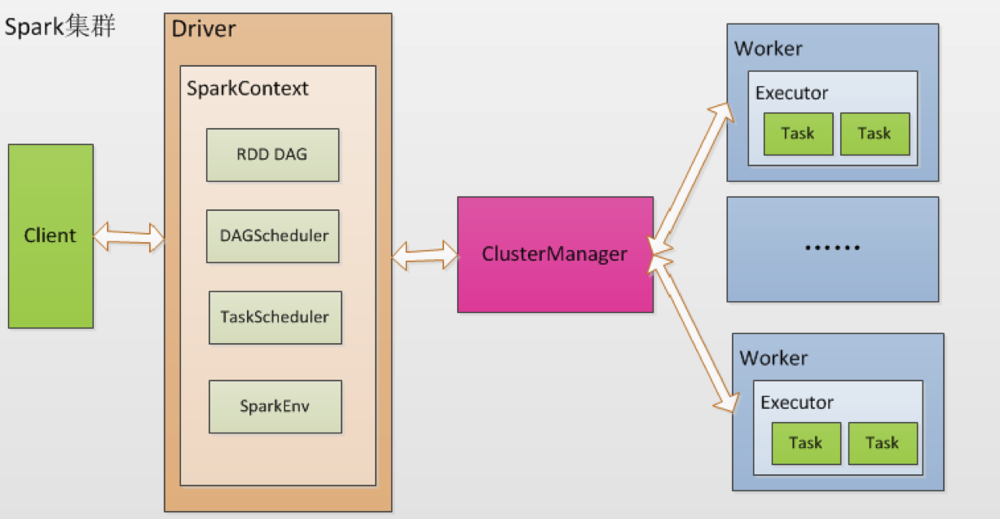
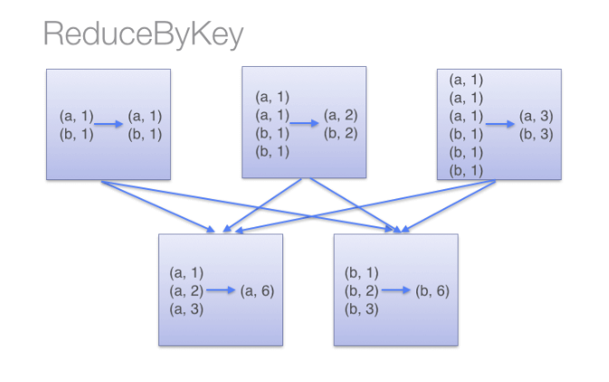

<!DOCTYPE html>
<html lang="zh-CN">
<head>
  <meta charset="UTF-8">
<meta name="viewport" content="width=device-width, initial-scale=1, maximum-scale=2">
<meta name="theme-color" content="#222">
<meta name="generator" content="Hexo 6.2.0">
  <link rel="apple-touch-icon" sizes="180x180" href="/images/apple-touch-icon-next.png">
  <link rel="icon" type="image/png" sizes="32x32" href="/images/favicon-32x32-next.png">
  <link rel="icon" type="image/png" sizes="16x16" href="/images/favicon-16x16-next.png">
  <link rel="mask-icon" href="/images/logo.svg" color="#222">

<link rel="stylesheet" href="/css/main.css">


<link rel="stylesheet" href="/lib/font-awesome/css/all.min.css">

<script id="hexo-configurations">
    var NexT = window.NexT || {};
    var CONFIG = {"hostname":"matt90luo.github.io","root":"/","scheme":"Mist","version":"7.8.0","exturl":false,"sidebar":{"position":"left","display":"post","padding":18,"offset":12,"onmobile":false},"copycode":{"enable":false,"show_result":false,"style":null},"back2top":{"enable":true,"sidebar":false,"scrollpercent":false},"bookmark":{"enable":false,"color":"#222","save":"auto"},"fancybox":false,"mediumzoom":false,"lazyload":false,"pangu":false,"comments":{"style":"tabs","active":null,"storage":true,"lazyload":false,"nav":null},"algolia":{"hits":{"per_page":10},"labels":{"input_placeholder":"Search for Posts","hits_empty":"We didn't find any results for the search: ${query}","hits_stats":"${hits} results found in ${time} ms"}},"localsearch":{"enable":false,"trigger":"auto","top_n_per_article":1,"unescape":false,"preload":false},"motion":{"enable":true,"async":false,"transition":{"post_block":"fadeIn","post_header":"slideDownIn","post_body":"slideDownIn","coll_header":"slideLeftIn","sidebar":"slideUpIn"}},"path":"./public/search.xml"};
  </script>

  <meta name="description" content="本篇文章会讲述spark应用的性能调优, 针对常见的数据倾斜问题提出了一些解决方案, 以及如何避免Task Not SerializableException错误">
<meta property="og:type" content="article">
<meta property="og:title" content="大数据--spark应用性能优化常见错误处理">
<meta property="og:url" content="https://matt90luo.github.io/2020/05/08/%E5%A4%A7%E6%95%B0%E6%8D%AE-spark%E5%BA%94%E7%94%A8%E6%80%A7%E8%83%BD%E4%BC%98%E5%8C%96%E5%B8%B8%E8%A7%81%E9%94%99%E8%AF%AF%E5%A4%84%E7%90%86/index.html">
<meta property="og:site_name" content="ukiml的博客">
<meta property="og:description" content="本篇文章会讲述spark应用的性能调优, 针对常见的数据倾斜问题提出了一些解决方案, 以及如何避免Task Not SerializableException错误">
<meta property="og:locale" content="zh_CN">
<meta property="og:image" content="https://matt90luo.github.io/2020/05/08/%E5%A4%A7%E6%95%B0%E6%8D%AE-spark%E5%BA%94%E7%94%A8%E6%80%A7%E8%83%BD%E4%BC%98%E5%8C%96%E5%B8%B8%E8%A7%81%E9%94%99%E8%AF%AF%E5%A4%84%E7%90%86/spark框架.png">
<meta property="og:image" content="https://matt90luo.github.io/2020/05/08/%E5%A4%A7%E6%95%B0%E6%8D%AE-spark%E5%BA%94%E7%94%A8%E6%80%A7%E8%83%BD%E4%BC%98%E5%8C%96%E5%B8%B8%E8%A7%81%E9%94%99%E8%AF%AF%E5%A4%84%E7%90%86/reducebykey.png">
<meta property="article:published_time" content="2020-05-08T21:11:25.000Z">
<meta property="article:modified_time" content="2022-07-25T09:43:42.130Z">
<meta property="article:author" content="ukiml">
<meta property="article:tag" content="spark">
<meta name="twitter:card" content="summary">
<meta name="twitter:image" content="https://matt90luo.github.io/2020/05/08/%E5%A4%A7%E6%95%B0%E6%8D%AE-spark%E5%BA%94%E7%94%A8%E6%80%A7%E8%83%BD%E4%BC%98%E5%8C%96%E5%B8%B8%E8%A7%81%E9%94%99%E8%AF%AF%E5%A4%84%E7%90%86/spark框架.png">

<link rel="canonical" href="https://matt90luo.github.io/2020/05/08/%E5%A4%A7%E6%95%B0%E6%8D%AE-spark%E5%BA%94%E7%94%A8%E6%80%A7%E8%83%BD%E4%BC%98%E5%8C%96%E5%B8%B8%E8%A7%81%E9%94%99%E8%AF%AF%E5%A4%84%E7%90%86/">


<script id="page-configurations">
  // https://hexo.io/docs/variables.html
  CONFIG.page = {
    sidebar: "",
    isHome : false,
    isPost : true,
    lang   : 'zh-CN'
  };
</script>

  <title>大数据--spark应用性能优化常见错误处理 | ukiml的博客</title>
  


  <noscript>
  <style>
  .use-motion .brand,
  .use-motion .menu-item,
  .sidebar-inner,
  .use-motion .post-block,
  .use-motion .pagination,
  .use-motion .comments,
  .use-motion .post-header,
  .use-motion .post-body,
  .use-motion .collection-header { opacity: initial; }

  .use-motion .site-title,
  .use-motion .site-subtitle {
    opacity: initial;
    top: initial;
  }

  .use-motion .logo-line-before i { left: initial; }
  .use-motion .logo-line-after i { right: initial; }
  </style>
</noscript>

</head>

<body itemscope itemtype="http://schema.org/WebPage">
  <div class="container use-motion">
    <div class="headband"></div>

    <header class="header" itemscope itemtype="http://schema.org/WPHeader">
      <div class="header-inner"><div class="site-brand-container">
  <div class="site-nav-toggle">
    <div class="toggle" aria-label="切换导航栏">
      <span class="toggle-line toggle-line-first"></span>
      <span class="toggle-line toggle-line-middle"></span>
      <span class="toggle-line toggle-line-last"></span>
    </div>
  </div>

  <div class="site-meta">

    <a href="/" class="brand" rel="start">
      <span class="logo-line-before"><i></i></span>
      <h1 class="site-title">ukiml的博客</h1>
      <span class="logo-line-after"><i></i></span>
    </a>
  </div>

  <div class="site-nav-right">
    <div class="toggle popup-trigger">
    </div>
  </div>
</div>


<nav class="site-nav">
  <ul id="menu" class="main-menu menu">
        <li class="menu-item menu-item-home">

    <a href="/" rel="section"><i class="home fa-fw"></i>首页</a>

  </li>
        <li class="menu-item menu-item-archives">

    <a href="/archives/" rel="section"><i class="archive fa-fw"></i>归档</a>

  </li>
        <li class="menu-item menu-item-about">

    <a href="/about/" rel="section"><i class="user fa-fw"></i>关于</a>

  </li>
        <li class="menu-item menu-item-tags">

    <a href="/tags/" rel="section"><i class="tags fa-fw"></i>标签</a>

  </li>
        <li class="menu-item menu-item-categories">

    <a href="/categories/" rel="section"><i class="th fa-fw"></i>分类</a>

  </li>
  </ul>
</nav>


</div>
    </header>

    
  <div class="back-to-top">
    <i class="fa fa-arrow-up"></i>
    <span>0%</span>
  </div>


    <main class="main">
      <div class="main-inner">
        <div class="content-wrap">
          

          <div class="content post posts-expand">
            

    
  
  
  <article itemscope itemtype="http://schema.org/Article" class="post-block" lang="zh-CN">
    <link itemprop="mainEntityOfPage" href="https://matt90luo.github.io/2020/05/08/%E5%A4%A7%E6%95%B0%E6%8D%AE-spark%E5%BA%94%E7%94%A8%E6%80%A7%E8%83%BD%E4%BC%98%E5%8C%96%E5%B8%B8%E8%A7%81%E9%94%99%E8%AF%AF%E5%A4%84%E7%90%86/">

    <span hidden itemprop="author" itemscope itemtype="http://schema.org/Person">
      <meta itemprop="image" content="/images/avatar.gif">
      <meta itemprop="name" content="ukiml">
      <meta itemprop="description" content="">
    </span>

    <span hidden itemprop="publisher" itemscope itemtype="http://schema.org/Organization">
      <meta itemprop="name" content="ukiml的博客">
    </span>
      <header class="post-header">
        <h1 class="post-title" itemprop="name headline">
          大数据--spark应用性能优化常见错误处理
        </h1>

        <div class="post-meta">
            <span class="post-meta-item">
              <span class="post-meta-item-icon">
                <i class="far fa-calendar"></i>
              </span>
              <span class="post-meta-item-text">发表于</span>

              <time title="创建时间：2020-05-08 21:11:25" itemprop="dateCreated datePublished" datetime="2020-05-08T21:11:25+00:00">2020-05-08</time>
            </span>
            <span class="post-meta-item">
              <span class="post-meta-item-icon">
                <i class="far fa-folder"></i>
              </span>
              <span class="post-meta-item-text">分类于</span>
                <span itemprop="about" itemscope itemtype="http://schema.org/Thing">
                  <a href="/categories/%E5%A4%A7%E6%95%B0%E6%8D%AE/" itemprop="url" rel="index"><span itemprop="name">大数据</span></a>
                </span>
            </span>

          <br>
            <span class="post-meta-item" title="本文字数">
              <span class="post-meta-item-icon">
                <i class="far fa-file-word"></i>
              </span>
                <span class="post-meta-item-text">本文字数：</span>
              <span>7.8k</span>
            </span>
            <span class="post-meta-item" title="阅读时长">
              <span class="post-meta-item-icon">
                <i class="far fa-clock"></i>
              </span>
                <span class="post-meta-item-text">阅读时长 &asymp;</span>
              <span>7 分钟</span>
            </span>

        </div>
      </header>

    
    
    
    <div class="post-body" itemprop="articleBody">

      
        <p>本篇文章会讲述spark应用的性能调优, 针对常见的数据倾斜问题提出了一些解决方案, 以及如何避免Task Not SerializableException错误 <span id="more"></span> ## spark基本结构和原理 Spark架构采用了分布式计算中的Master-Slave模型。Master是对应集群中的含有Master进程的节（ClusterManager），Slave是集群中含有Worker进程的节点。Master作为整个集群的控制器，负责整个集群的正常运行；Worker相当于是计算节点，接收主节点命令与进行状态汇报；Executor负责任务的执行；Client作为用户的客户端负责提交应用，Driver负责控制一个应用的执行 </p>
<ul>
<li><p><strong>job</strong> 所谓⼀个job，就是由⼀个 rdd 的 action 触发的动作，可以简 单的理解为，当你需要执⾏行⼀个 rdd 的 action 的时候，会⽣生成⼀个 job。</p></li>
<li><p><strong>stage</strong> stage 是⼀个 job 的组成单位，就是说，⼀个 job 会被切分成 1 个或 1 个以上的 stage，然后各个 stage 会按照执⾏行顺序依次执行。在⼀个 job 中划分 stage 的⼀个重要依据是是否有 shuflle 发 ⽣ ，也就是是否会发生数据的重组(重新组织数据)。</p></li>
<li><p><strong>task</strong> 即 stage 下的⼀个任务执⾏行单元，⼀般来说，⼀个 rdd 有多少 个 partition，就会有多少个 task，因为每⼀个 task 只是处理⼀个 partition 上的数据。</p></li>
</ul>
<h2 id="数据倾斜">数据倾斜</h2>
<p>何谓数据倾斜?数据倾斜指的是，并⾏处理的数据集中，某⼀部分(如 Spark 或 Kafka 的⼀个 Partition)的数据显著多于其它部分，从⽽使得该部分的处理速度成为整个数据集处理的瓶颈。 对分布式系统而言，理想情况下，随着系统规模(节点数量)的增加，应用整体耗时线性下降。如果⼀台机器处理⼀批⼤量数据需要120分钟，当机器数量增加到三时，理想的耗时为 120 / 3 = 40 分钟。但是发生数据倾斜时, 任务的执行速度由数据最大的那个任务决定</p>
<h3 id="如何判断数据倾斜">如何判断数据倾斜</h3>
<p>下面举了一些常见数据倾斜的现象 1. 绝⼤多数 task 执行得都非常快，但个别 task 执⾏极慢。比如， 总共有 1000 个 task，997 个 task 都在 1 分钟之内执行完了，但是剩余两三个task却要⼀两个小时。这种情况很常见。 2. 原本能够正常执⾏的 Spark 作业，某天突然报出 OOM(内存溢出)异常，观察异常栈，是我们写的业务代码造成的。</p>
<h3 id="发生数据倾斜的原因">发生数据倾斜的原因</h3>
<p>数据倾斜的原理很简单:在进⾏ shuffle 的时候，必须将各个节点上相同的 key 拉取到某个节点上的⼀个 task 来进行处理，比如按照 key 进行聚合或 join 等操作。此时如果某个 key 对应的数据量特别大的话，就会发⽣数据倾斜。比如大部分 key 对应10条数据，但是个别 key 却对应了 100 万条数据，那么大部分 task 可能就只会分配到 10 条数据，然后 1 秒钟就运⾏完了。但是个别 task 可能分配到了 100 万数据，要运⾏一两个小时。因此，整个 Spark 作业的运行进度 是由运行时间最长的那个task决定的。</p>
<h3 id="如何定位数据倾斜">如何定位数据倾斜</h3>
<p>数据倾斜只会发⽣在 shuffle 过程中。这里给⼤家罗列⼀些常用的并且可能会触发 shuffle 操作的算子:distinct、groupByKey、reduceByKey、aggregateByKey、 join、cogroup、repartition 等。出现数据倾斜时，可能就是你的代码中使用了这些算⼦中的某⼀个所导致的。</p>
<h2 id="处理数据倾斜的一般方法">处理数据倾斜的一般方法</h2>
<ol type="1">
<li><p>自定义partitioner Spark 在做 Shuffle 时，默认使用 HashPartitioner 对数据进⾏分区，可以使用自定义的 Partitioner，将原本被分配到同⼀个 Task 的不同 Key 分配到不同 Task。</p></li>
<li><p>聚合类操作使用reducedByKey, 或者先局部聚合 使用reduceBYkey会首先在分区中计算，这样可减少部分shuffle  或者通过添加随机数的方式, 先聚合，然后删掉随机数，再次聚合，这样尽可能保证shuffle后的每个分区内的数据不会过多</p></li>
<li><p>join操作可以使用广播变量或者增容 在做join关联时，如果其中一个RDD较小，那么建议直接做为广播变量使用, 如果两个RDD都很大, 并且存在数据倾斜(Key分布不均)，可以对其中一个RDD中的key添加随机数0~n，另一个RDD扩容n倍(每个key都对应了n个)，用空间换时间, 减少大规模的shuffle</p></li>
</ol>
<h2 id="正确使用spark广播变量">正确使用spark广播变量</h2>
<p>对于广播变量，尽量避免使用容器嵌套的形式，非常容易导致内存异常，可以先转成字符串(或者其他序列化方式)，再进行传输。</p>
<p>这里有个按列:</p>
<p>RDD结构RDD[cookieid, list[obj]] 大小为百万记录, 和另一个RDD[cookieid]需要做关联, 决定采用 广播RDD[cookieid]的方式 过程中分别出现以下问题 1. spark.kryoserializer.buffer.max 设置过小, 广播时需要的buffer 根据实际系列化的对象大小 适当调大 2. Total size of serialized results of 1 tasks (1499.7 MB) is bigger than spark.driver.maxResultSize (1024.0 MB) 由于广播变量是由driver端分发的, 确保driver端的内存设置合适。 3. 由于spark内部采用的kryo版本存在bug 在序列化的列表对象长度超过10亿时会产生 serializing large (&gt; 1 billion) objects may result in a java.lang.NegativeArraySizeException 解决办法是 临时设置 spark.kryo.refferenceTrackingEnabled=false</p>
<h2 id="spark序列化问题">spark序列化问题</h2>
<p>spark新手会遇到Task NotSerializableException异常，我也曾被这个报错折磨许久，所以我深入研究了一下导致这个问题的来龙去脉。在谈这个问题之前我们先讨论一个小话题: 什么叫闭包 ### 闭包 借用某位程序员的说法, 闭包就是: 1. 闭包是一个有状态（不消失的私有数据）的函数。 2. 闭包是一个有记忆的函数。 3. 闭包相当于一个只有一个方法的紧凑对象（a compact object) 4. 面这三句话是等价的，而其中第 3 句最精妙，可以指导何时、如何用好闭包，后面我会详细分析。 首先闭包是一种函数, 普通函数如果只有局部变量那么就不会和自由变量有关系, 自由变量就是不受我函数内部控制的 贴一段经典java闭包技术: Java最常用的闭包实现办法:内部类实现通用接口，然后将内部类对象向上转型为接口类型。（内部类+接口） <figure class="highlight java"><table><tr><td class="gutter"><pre><span class="line">1</span><br><span class="line">2</span><br><span class="line">3</span><br><span class="line">4</span><br><span class="line">5</span><br><span class="line">6</span><br><span class="line">7</span><br><span class="line">8</span><br><span class="line">9</span><br><span class="line">10</span><br><span class="line">11</span><br><span class="line">12</span><br><span class="line">13</span><br><span class="line">14</span><br><span class="line">15</span><br><span class="line">16</span><br><span class="line">17</span><br><span class="line">18</span><br><span class="line">19</span><br><span class="line">20</span><br><span class="line">21</span><br><span class="line">22</span><br><span class="line">23</span><br><span class="line">24</span><br><span class="line">25</span><br><span class="line">26</span><br><span class="line">27</span><br><span class="line">28</span><br><span class="line">29</span><br><span class="line">30</span><br><span class="line">31</span><br><span class="line">32</span><br><span class="line">33</span><br><span class="line">34</span><br><span class="line">35</span><br><span class="line">36</span><br><span class="line">37</span><br><span class="line">38</span><br><span class="line">39</span><br><span class="line">40</span><br><span class="line">41</span><br><span class="line">42</span><br><span class="line">43</span><br><span class="line">44</span><br><span class="line">45</span><br><span class="line">46</span><br><span class="line">47</span><br><span class="line">48</span><br><span class="line">49</span><br><span class="line">50</span><br><span class="line">51</span><br><span class="line">52</span><br><span class="line">53</span><br></pre></td><td class="code"><pre><span class="line"><span class="keyword">public</span> <span class="keyword">class</span> <span class="title class_">Milk</span> &#123;</span><br><span class="line">	<span class="keyword">public</span> <span class="keyword">final</span> <span class="keyword">static</span> <span class="type">String</span> <span class="variable">name</span> <span class="operator">=</span> <span class="string">&quot;纯牛奶&quot;</span>;<span class="comment">//名称</span></span><br><span class="line">	<span class="keyword">private</span> <span class="keyword">static</span> <span class="type">int</span> <span class="variable">num</span> <span class="operator">=</span> <span class="number">16</span>;<span class="comment">//数量</span></span><br><span class="line">	<span class="keyword">public</span> <span class="title function_">Milk</span><span class="params">()</span>&#123;</span><br><span class="line">		System.out.println(name+<span class="string">&quot;：16/每箱&quot;</span>);</span><br><span class="line">	&#125;</span><br><span class="line">	<span class="comment">/**</span></span><br><span class="line"><span class="comment">	 * 闭包</span></span><br><span class="line"><span class="comment">	 * <span class="doctag">@return</span> 返回一个喝牛奶的动作</span></span><br><span class="line"><span class="comment">	 */</span></span><br><span class="line">	<span class="keyword">public</span> Active <span class="title function_">HaveMeals</span><span class="params">()</span>&#123;</span><br><span class="line">		<span class="keyword">return</span> <span class="keyword">new</span> <span class="title class_">Active</span>()&#123;</span><br><span class="line">					<span class="keyword">public</span> <span class="keyword">void</span> <span class="title function_">drink</span><span class="params">()</span>&#123;</span><br><span class="line">						<span class="keyword">if</span>(num == <span class="number">0</span>)&#123;</span><br><span class="line">							System.out.println(<span class="string">&quot;木有了，都被你丫喝完了.&quot;</span>);</span><br><span class="line">							<span class="keyword">return</span>;</span><br><span class="line">						&#125;</span><br><span class="line">						num--;</span><br><span class="line">						System.out.println(<span class="string">&quot;喝掉一瓶牛奶&quot;</span>);</span><br><span class="line">					&#125;</span><br><span class="line">		&#125;;</span><br><span class="line">	&#125;</span><br><span class="line">	</span><br><span class="line">	<span class="comment">/**</span></span><br><span class="line"><span class="comment">	 * 获取剩余数量</span></span><br><span class="line"><span class="comment">	 */</span></span><br><span class="line">	<span class="keyword">public</span> <span class="keyword">void</span> <span class="title function_">currentNum</span><span class="params">()</span></span><br><span class="line">	&#123;</span><br><span class="line">		System.out.println(name+<span class="string">&quot;剩余：&quot;</span>+num);</span><br><span class="line">	&#125;</span><br><span class="line">&#125;</span><br><span class="line"> </span><br><span class="line"><span class="comment">/**</span></span><br><span class="line"><span class="comment"> * 通用接口</span></span><br><span class="line"><span class="comment"> */</span></span><br><span class="line"><span class="keyword">interface</span> <span class="title class_">Active</span></span><br><span class="line">&#123;</span><br><span class="line">	<span class="keyword">void</span> <span class="title function_">drink</span><span class="params">()</span>;</span><br><span class="line">&#125;</span><br><span class="line"></span><br><span class="line"><span class="keyword">public</span> <span class="keyword">class</span> <span class="title class_">Person</span> &#123;</span><br><span class="line">    <span class="keyword">public</span> <span class="keyword">static</span> <span class="keyword">void</span> <span class="title function_">main</span><span class="params">(String[] args)</span> &#123;</span><br><span class="line">		<span class="comment">//买一箱牛奶</span></span><br><span class="line">		<span class="type">Milk</span> <span class="variable">m</span> <span class="operator">=</span> <span class="keyword">new</span> <span class="title class_">Milk</span>();	</span><br><span class="line">		<span class="type">Active</span> <span class="variable">haveMeals</span> <span class="operator">=</span> m.HaveMeals();</span><br><span class="line">		<span class="comment">//没事喝一瓶</span></span><br><span class="line">		haveMeals.drink();</span><br><span class="line">		<span class="comment">//有事喝一瓶</span></span><br><span class="line">		haveMeals.drink();</span><br><span class="line">		<span class="comment">//看看还剩多少？</span></span><br><span class="line">		m.currentNum();</span><br><span class="line">	&#125;</span><br><span class="line">&#125;</span><br></pre></td></tr></table></figure> 看着还是比较清楚的, 下面我们再来看看scala的闭包实现 <figure class="highlight scala"><table><tr><td class="gutter"><pre><span class="line">1</span><br><span class="line">2</span><br></pre></td><td class="code"><pre><span class="line"><span class="keyword">var</span> factor = <span class="number">3</span>  </span><br><span class="line"><span class="keyword">val</span> multiplier = (i:<span class="type">Int</span>) =&gt; i * factor  </span><br></pre></td></tr></table></figure> 一个函数对象需要引用到外部变量</p>
<h3 id="为什么会task-not-serializable">为什么会task not serializable</h3>
<p>让我来引用databricks官方文档 &gt;org.apache.spark.SparkException: Job aborted due to stage failure: Task not serializable: java.io.NotSerializableException: ...</p>
<blockquote>
<p>The above error can be triggered when you intialize a variable on the driver (master), but then try to use it on one of the workers. In that case, Spark Streaming will try to serialize the object to send it over to the worker, and fail if the object is not serializable. Consider the following code snippet: 简单来说, 如果我在worker端使用了driver初始化的变量，需要保证这个对象序列化成功 比如下面的例子: <figure class="highlight java"><table><tr><td class="gutter"><pre><span class="line">1</span><br><span class="line">2</span><br><span class="line">3</span><br><span class="line">4</span><br></pre></td><td class="code"><pre><span class="line"><span class="type">NotSerializable</span> <span class="variable">notSerializable</span> <span class="operator">=</span> <span class="keyword">new</span> <span class="title class_">NotSerializable</span>();</span><br><span class="line">JavaRDD&lt;String&gt; rdd = sc.textFile(<span class="string">&quot;/tmp/myfile&quot;</span>);</span><br><span class="line"></span><br><span class="line">rdd.map(s -&gt; notSerializable.doSomething(s)).collect();</span><br></pre></td></tr></table></figure></p>
</blockquote>
<p>官方给出的处理这个错误的方法有以下几种 - Serializable the class  将引用的类做成可序列化的。 - Declare the instance only within the lambda function passed in map. 将依赖的变量放到map、filter等的参数内部定义。这样就可以使用不支持序列化的类； - Make the NotSerializable object as a static and create it once per machine. 将依赖的变量放到静态对象 这样会在每一个jvm中生成一次 - Call rdd.forEachPartition and create the NotSerializable object in there like this:</p>
<figure class="highlight java"><table><tr><td class="gutter"><pre><span class="line">1</span><br><span class="line">2</span><br><span class="line">3</span><br><span class="line">4</span><br><span class="line">5</span><br></pre></td><td class="code"><pre><span class="line">rdd.forEachPartition(iter -&gt; &#123;</span><br><span class="line">  <span class="type">NotSerializable</span> <span class="variable">notSerializable</span> <span class="operator">=</span> <span class="keyword">new</span> <span class="title class_">NotSerializable</span>();</span><br><span class="line"></span><br><span class="line">  <span class="comment">// ...Now process iter</span></span><br><span class="line">&#125;);</span><br></pre></td></tr></table></figure>
<p>由于Spark是分布式执行引擎，其核心抽象是弹性分布式数据集RDD，其代表了分布在不同节点的数据。Spark的计算是在executor上分布式执行的，故用户开发的关于RDD的map，flatMap，reduceByKey等transformation 操作（闭包）有如下执行过程： 1. 代码中对象在driver本地序列化 2. 对象序列化后传输到远程executor节点 3. 远程executor节点反序列化对象 4. 最终远程节点执行 故对象在执行中需要序列化通过网络传输，则必须经过序列化过程。</p>
<p>我们的解决方法也很直接, 要么类可以序列化, 要么写成成员函数 先看一个<font color=red>错误</font>例子</p>
<figure class="highlight scala"><table><tr><td class="gutter"><pre><span class="line">1</span><br><span class="line">2</span><br><span class="line">3</span><br><span class="line">4</span><br><span class="line">5</span><br><span class="line">6</span><br><span class="line">7</span><br><span class="line">8</span><br><span class="line">9</span><br><span class="line">10</span><br><span class="line">11</span><br><span class="line">12</span><br><span class="line">13</span><br><span class="line">14</span><br><span class="line">15</span><br><span class="line">16</span><br><span class="line">17</span><br><span class="line">18</span><br></pre></td><td class="code"><pre><span class="line"><span class="class"><span class="keyword">object</span> <span class="title">NOTworking</span> <span class="keyword">extends</span> <span class="title">App</span> </span>&#123;</span><br><span class="line">  <span class="keyword">new</span> testing().doIT</span><br><span class="line">&#125;</span><br><span class="line"></span><br><span class="line"><span class="comment">//adding extends Serializable wont help</span></span><br><span class="line"><span class="class"><span class="keyword">class</span> <span class="title">testing</span> </span>&#123;  </span><br><span class="line">  <span class="keyword">val</span> list = <span class="type">List</span>(<span class="number">1</span>,<span class="number">2</span>,<span class="number">3</span>)  </span><br><span class="line">  <span class="keyword">val</span> rddList = <span class="type">Spark</span>.ctx.parallelize(list)</span><br><span class="line"></span><br><span class="line">  <span class="function"><span class="keyword">def</span> <span class="title">doIT</span> </span>=  &#123;</span><br><span class="line">    <span class="comment">//again calling the fucntion someFunc </span></span><br><span class="line">    <span class="keyword">val</span> after = rddList.map(someFunc(_))</span><br><span class="line">    <span class="comment">//this will crash (spark lazy)</span></span><br><span class="line">    after.collect().map(println(_))</span><br><span class="line">  &#125;</span><br><span class="line"></span><br><span class="line">  <span class="function"><span class="keyword">def</span> <span class="title">someFunc</span></span>(a:<span class="type">Int</span>) = a+<span class="number">1</span></span><br><span class="line">&#125;</span><br></pre></td></tr></table></figure>
<p>我们可以让这个类继承Serializable接口 <figure class="highlight scala"><table><tr><td class="gutter"><pre><span class="line">1</span><br><span class="line">2</span><br><span class="line">3</span><br><span class="line">4</span><br><span class="line">5</span><br><span class="line">6</span><br><span class="line">7</span><br><span class="line">8</span><br><span class="line">9</span><br><span class="line">10</span><br><span class="line">11</span><br><span class="line">12</span><br><span class="line">13</span><br><span class="line">14</span><br><span class="line">15</span><br><span class="line">16</span><br><span class="line">17</span><br><span class="line">18</span><br><span class="line">19</span><br><span class="line">20</span><br></pre></td><td class="code"><pre><span class="line"><span class="keyword">import</span> org.apache.spark.&#123;<span class="type">SparkContext</span>,<span class="type">SparkConf</span>&#125;</span><br><span class="line"></span><br><span class="line"><span class="class"><span class="keyword">object</span> <span class="title">Spark</span> </span>&#123;</span><br><span class="line">  <span class="keyword">val</span> ctx = <span class="keyword">new</span> <span class="type">SparkContext</span>(<span class="keyword">new</span> <span class="type">SparkConf</span>().setAppName(<span class="string">&quot;test&quot;</span>).setMaster(<span class="string">&quot;local[*]&quot;</span>))</span><br><span class="line">&#125;</span><br><span class="line"></span><br><span class="line"><span class="class"><span class="keyword">object</span> <span class="title">NOTworking</span> <span class="keyword">extends</span> <span class="title">App</span> </span>&#123;</span><br><span class="line">  <span class="keyword">new</span> <span class="type">Test</span>().doIT</span><br><span class="line">&#125;</span><br><span class="line"></span><br><span class="line"><span class="class"><span class="keyword">class</span> <span class="title">Test</span> <span class="keyword">extends</span> <span class="title">java</span>.<span class="title">io</span>.<span class="title">Serializable</span> </span>&#123;</span><br><span class="line">  <span class="keyword">val</span> rddList = <span class="type">Spark</span>.ctx.parallelize(<span class="type">List</span>(<span class="number">1</span>,<span class="number">2</span>,<span class="number">3</span>))</span><br><span class="line"></span><br><span class="line">  <span class="function"><span class="keyword">def</span> <span class="title">doIT</span></span>() =  &#123;</span><br><span class="line">    <span class="keyword">val</span> after = rddList.map(someFunc)</span><br><span class="line">    after.collect().foreach(println)</span><br><span class="line">  &#125;</span><br><span class="line"></span><br><span class="line">  <span class="function"><span class="keyword">def</span> <span class="title">someFunc</span></span>(a: <span class="type">Int</span>) = a + <span class="number">1</span></span><br><span class="line">&#125;</span><br></pre></td></tr></table></figure> 或者</p>
<figure class="highlight scala"><table><tr><td class="gutter"><pre><span class="line">1</span><br><span class="line">2</span><br><span class="line">3</span><br><span class="line">4</span><br><span class="line">5</span><br><span class="line">6</span><br><span class="line">7</span><br><span class="line">8</span><br><span class="line">9</span><br><span class="line">10</span><br><span class="line">11</span><br><span class="line">12</span><br><span class="line">13</span><br><span class="line">14</span><br><span class="line">15</span><br><span class="line">16</span><br><span class="line">17</span><br><span class="line">18</span><br><span class="line">19</span><br><span class="line">20</span><br></pre></td><td class="code"><pre><span class="line"><span class="keyword">import</span> org.apache.spark.&#123;<span class="type">SparkContext</span>,<span class="type">SparkConf</span>&#125;</span><br><span class="line"></span><br><span class="line"><span class="class"><span class="keyword">object</span> <span class="title">Spark</span> </span>&#123;</span><br><span class="line">  <span class="keyword">val</span> ctx = <span class="keyword">new</span> <span class="type">SparkContext</span>(<span class="keyword">new</span> <span class="type">SparkConf</span>().setAppName(<span class="string">&quot;test&quot;</span>).setMaster(<span class="string">&quot;local[*]&quot;</span>))</span><br><span class="line">&#125;</span><br><span class="line"></span><br><span class="line"><span class="class"><span class="keyword">object</span> <span class="title">NOTworking</span> <span class="keyword">extends</span> <span class="title">App</span> </span>&#123;</span><br><span class="line">  <span class="keyword">new</span> <span class="type">Test</span>().doIT</span><br><span class="line">&#125;</span><br><span class="line"></span><br><span class="line"><span class="class"><span class="keyword">class</span> <span class="title">Test</span> </span>&#123;</span><br><span class="line">  <span class="keyword">val</span> rddList = <span class="type">Spark</span>.ctx.parallelize(<span class="type">List</span>(<span class="number">1</span>,<span class="number">2</span>,<span class="number">3</span>))</span><br><span class="line"></span><br><span class="line">  <span class="function"><span class="keyword">def</span> <span class="title">doIT</span></span>() =  &#123;</span><br><span class="line">    <span class="keyword">val</span> after = rddList.map(someFunc)</span><br><span class="line">    after.collect().foreach(println)</span><br><span class="line">  &#125;</span><br><span class="line"></span><br><span class="line">  <span class="keyword">val</span> someFunc = (a: <span class="type">Int</span>) =&gt; a + <span class="number">1</span></span><br><span class="line">&#125;</span><br></pre></td></tr></table></figure>
<p>具体可以参考<a target="_blank" rel="noopener" href="https://stackoverflow.com/questions/22592811/task-not-serializable-java-io-notserializableexception-when-calling-function-ou">Stack Overflow</a>上的回答。</p>
<p>下面再举一个例子说明可能会出现Task Not Serializable 依据上述分析的原因，由于依赖了当前类的成员变量，所以导致当前类全部需要序列化，由于当前类某些字段未做好序列化，导致出错。 <figure class="highlight scala"><table><tr><td class="gutter"><pre><span class="line">1</span><br><span class="line">2</span><br><span class="line">3</span><br><span class="line">4</span><br><span class="line">5</span><br><span class="line">6</span><br><span class="line">7</span><br><span class="line">8</span><br><span class="line">9</span><br><span class="line">10</span><br><span class="line">11</span><br><span class="line">12</span><br><span class="line">13</span><br></pre></td><td class="code"><pre><span class="line"><span class="class"><span class="keyword">class</span> <span class="title">MyTest1</span>(<span class="params">conf:<span class="type">String</span></span>) <span class="keyword">extends</span> <span class="title">Serializable</span></span>&#123;</span><br><span class="line">  <span class="keyword">val</span> list = <span class="type">List</span>(<span class="string">&quot;a.com&quot;</span>, <span class="string">&quot;www.b.com&quot;</span>, <span class="string">&quot;a.cn&quot;</span>, <span class="string">&quot;a.com.cn&quot;</span>, <span class="string">&quot;a.org&quot;</span>);</span><br><span class="line">  <span class="keyword">private</span> <span class="keyword">val</span> sparkConf = <span class="keyword">new</span> <span class="type">SparkConf</span>().setAppName(<span class="string">&quot;AppName&quot;</span>);</span><br><span class="line">  <span class="keyword">private</span> <span class="keyword">val</span> sc = <span class="keyword">new</span> <span class="type">SparkContext</span>(sparkConf);</span><br><span class="line">  <span class="keyword">val</span> rdd = sc.parallelize(list);</span><br><span class="line"></span><br><span class="line">  <span class="keyword">private</span> <span class="keyword">val</span> rootDomain = conf</span><br><span class="line"></span><br><span class="line">  <span class="function"><span class="keyword">def</span> <span class="title">getResult</span></span>(): <span class="type">Array</span>[(<span class="type">String</span>)] = &#123;</span><br><span class="line">    <span class="keyword">val</span> result = rdd.filter(item =&gt; item.contains(rootDomain))</span><br><span class="line">    result.take(result.count().toInt)</span><br><span class="line">  &#125;</span><br><span class="line">&#125;</span><br></pre></td></tr></table></figure> 如果我们将上述代码改成如下形式 <figure class="highlight scala"><table><tr><td class="gutter"><pre><span class="line">1</span><br><span class="line">2</span><br><span class="line">3</span><br><span class="line">4</span><br><span class="line">5</span><br><span class="line">6</span><br><span class="line">7</span><br><span class="line">8</span><br><span class="line">9</span><br><span class="line">10</span><br><span class="line">11</span><br><span class="line">12</span><br><span class="line">13</span><br><span class="line">14</span><br><span class="line">15</span><br><span class="line">16</span><br></pre></td><td class="code"><pre><span class="line"><span class="class"><span class="keyword">class</span> <span class="title">MyTest1</span>(<span class="params">conf:<span class="type">String</span></span>) <span class="keyword">extends</span> <span class="title">Serializable</span></span>&#123;</span><br><span class="line">  <span class="keyword">val</span> list = <span class="type">List</span>(<span class="string">&quot;a.com&quot;</span>, <span class="string">&quot;www.b.com&quot;</span>, <span class="string">&quot;a.cn&quot;</span>, <span class="string">&quot;a.com.cn&quot;</span>, <span class="string">&quot;a.org&quot;</span>);</span><br><span class="line">  <span class="meta">@transient</span></span><br><span class="line">  <span class="keyword">private</span> <span class="keyword">val</span> sparkConf = <span class="keyword">new</span> <span class="type">SparkConf</span>().setAppName(<span class="string">&quot;AppName&quot;</span>);</span><br><span class="line">  <span class="meta">@transient</span></span><br><span class="line">  <span class="keyword">private</span> <span class="keyword">val</span> sc = <span class="keyword">new</span> <span class="type">SparkContext</span>(sparkConf);</span><br><span class="line">  <span class="keyword">val</span> rdd = sc.parallelize(list);</span><br><span class="line"></span><br><span class="line">  <span class="keyword">private</span> <span class="keyword">val</span> rootDomain = conf</span><br><span class="line"></span><br><span class="line">  <span class="function"><span class="keyword">def</span> <span class="title">getResult</span></span>(): <span class="type">Array</span>[(<span class="type">String</span>)] = &#123;</span><br><span class="line"></span><br><span class="line">    <span class="keyword">val</span> result = rdd.filter(item =&gt; item.contains(rootDomain))</span><br><span class="line">    result.take(result.count().toInt)</span><br><span class="line">  &#125;</span><br><span class="line">&#125;</span><br></pre></td></tr></table></figure> 对类中那些不支持序列化的成员变量标注后，使得整个类能够正常序列化，最终消除Task未序列化问题。</p>
<h3 id="如何避免task-not-serializable">如何避免task not serializable</h3>
<p>出现“task not serializable&quot;这个错误，一般是因为在map、filter等的参数使用了外部的变量，但是这个变量不能序列化。特别是当引用了某个类（经常是当前类）的成员函数或变量时，会导致这个类的所有成员（整个类）都需要支持序列化。解决这个问题最常用的方法有： 1. 如果可以，将依赖的变量放到map、filter等的参数内部定义。这样就可以使用不支持序列化的类； 2. 如果可以，将依赖的变量独立放到一个小的class中，让这个class支持序列化；这样做可以减少网络传输量，提高效率； 3. 如果可以，将被依赖的类中不能序列化的部分使用transient关键字修饰，告诉编译器它不需要序列化。 4. 将引用的类做成可序列化的。</p>

    </div>

    
    
    

      <footer class="post-footer">
          <div class="post-tags">
              <a href="/tags/spark/" rel="tag"># spark</a>
          </div>

        


        
    <div class="post-nav">
      <div class="post-nav-item">
    <a href="/2020/04/25/%E6%8E%A8%E8%8D%90%E7%B3%BB%E7%BB%9F-%E5%9F%BA%E4%BA%8Espark-graphX%E7%9A%84pageRank%E7%AE%97%E6%B3%95%E8%AE%A1%E7%AE%97%E5%86%B7%E5%90%AF%E5%8A%A8%E5%95%86%E5%93%81/" rel="prev" title="推荐系统--基于spark graphX的pageRank算法计算冷启动商品">
      <i class="fa fa-chevron-left"></i> 推荐系统--基于spark graphX的pageRank算法计算冷启动商品
    </a></div>
      <div class="post-nav-item">
    <a href="/2020/05/16/%E5%A4%A7%E6%95%B0%E6%8D%AE-spark-streaming%E5%BC%80%E5%8F%91%E6%80%BB%E7%BB%93/" rel="next" title="大数据--spark-streaming开发总结">
      大数据--spark-streaming开发总结 <i class="fa fa-chevron-right"></i>
    </a></div>
    </div>
      </footer>
    
  </article>
  
  
  


          </div>
          
    <div class="comments" id="gitalk-container"></div>

<script>
  window.addEventListener('tabs:register', () => {
    let { activeClass } = CONFIG.comments;
    if (CONFIG.comments.storage) {
      activeClass = localStorage.getItem('comments_active') || activeClass;
    }
    if (activeClass) {
      let activeTab = document.querySelector(`a[href="#comment-${activeClass}"]`);
      if (activeTab) {
        activeTab.click();
      }
    }
  });
  if (CONFIG.comments.storage) {
    window.addEventListener('tabs:click', event => {
      if (!event.target.matches('.tabs-comment .tab-content .tab-pane')) return;
      let commentClass = event.target.classList[1];
      localStorage.setItem('comments_active', commentClass);
    });
  }
</script>

        </div>
          
  
  <div class="toggle sidebar-toggle">
    <span class="toggle-line toggle-line-first"></span>
    <span class="toggle-line toggle-line-middle"></span>
    <span class="toggle-line toggle-line-last"></span>
  </div>

  <aside class="sidebar">
    <div class="sidebar-inner">

      <ul class="sidebar-nav motion-element">
        <li class="sidebar-nav-toc">
          文章目录
        </li>
        <li class="sidebar-nav-overview">
          站点概览
        </li>
      </ul>

      <!--noindex-->
      <div class="post-toc-wrap sidebar-panel">
          <div class="post-toc motion-element"><ol class="nav"><li class="nav-item nav-level-2"><a class="nav-link" href="#%E6%95%B0%E6%8D%AE%E5%80%BE%E6%96%9C"><span class="nav-number">1.</span> <span class="nav-text">数据倾斜</span></a><ol class="nav-child"><li class="nav-item nav-level-3"><a class="nav-link" href="#%E5%A6%82%E4%BD%95%E5%88%A4%E6%96%AD%E6%95%B0%E6%8D%AE%E5%80%BE%E6%96%9C"><span class="nav-number">1.1.</span> <span class="nav-text">如何判断数据倾斜</span></a></li><li class="nav-item nav-level-3"><a class="nav-link" href="#%E5%8F%91%E7%94%9F%E6%95%B0%E6%8D%AE%E5%80%BE%E6%96%9C%E7%9A%84%E5%8E%9F%E5%9B%A0"><span class="nav-number">1.2.</span> <span class="nav-text">发生数据倾斜的原因</span></a></li><li class="nav-item nav-level-3"><a class="nav-link" href="#%E5%A6%82%E4%BD%95%E5%AE%9A%E4%BD%8D%E6%95%B0%E6%8D%AE%E5%80%BE%E6%96%9C"><span class="nav-number">1.3.</span> <span class="nav-text">如何定位数据倾斜</span></a></li></ol></li><li class="nav-item nav-level-2"><a class="nav-link" href="#%E5%A4%84%E7%90%86%E6%95%B0%E6%8D%AE%E5%80%BE%E6%96%9C%E7%9A%84%E4%B8%80%E8%88%AC%E6%96%B9%E6%B3%95"><span class="nav-number">2.</span> <span class="nav-text">处理数据倾斜的一般方法</span></a></li><li class="nav-item nav-level-2"><a class="nav-link" href="#%E6%AD%A3%E7%A1%AE%E4%BD%BF%E7%94%A8spark%E5%B9%BF%E6%92%AD%E5%8F%98%E9%87%8F"><span class="nav-number">3.</span> <span class="nav-text">正确使用spark广播变量</span></a></li><li class="nav-item nav-level-2"><a class="nav-link" href="#spark%E5%BA%8F%E5%88%97%E5%8C%96%E9%97%AE%E9%A2%98"><span class="nav-number">4.</span> <span class="nav-text">spark序列化问题</span></a><ol class="nav-child"><li class="nav-item nav-level-3"><a class="nav-link" href="#%E4%B8%BA%E4%BB%80%E4%B9%88%E4%BC%9Atask-not-serializable"><span class="nav-number">4.1.</span> <span class="nav-text">为什么会task not serializable</span></a></li><li class="nav-item nav-level-3"><a class="nav-link" href="#%E5%A6%82%E4%BD%95%E9%81%BF%E5%85%8Dtask-not-serializable"><span class="nav-number">4.2.</span> <span class="nav-text">如何避免task not serializable</span></a></li></ol></li></ol></div>
      </div>
      <!--/noindex-->

      <div class="site-overview-wrap sidebar-panel">
        <div class="site-author motion-element" itemprop="author" itemscope itemtype="http://schema.org/Person">
  <p class="site-author-name" itemprop="name">ukiml</p>
  <div class="site-description" itemprop="description"></div>
</div>
<div class="site-state-wrap motion-element">
  <nav class="site-state">
      <div class="site-state-item site-state-posts">
          <a href="/archives/">
        
          <span class="site-state-item-count">19</span>
          <span class="site-state-item-name">日志</span>
        </a>
      </div>
      <div class="site-state-item site-state-categories">
            <a href="/categories/">
          
        <span class="site-state-item-count">6</span>
        <span class="site-state-item-name">分类</span></a>
      </div>
      <div class="site-state-item site-state-tags">
            <a href="/tags/">
          
        <span class="site-state-item-count">5</span>
        <span class="site-state-item-name">标签</span></a>
      </div>
  </nav>
</div>


      </div>

    </div>
  </aside>
  <div id="sidebar-dimmer"></div>


      </div>
    </main>

    <footer class="footer">
      <div class="footer-inner">
        

        

<div class="copyright">
  
  &copy; 
  <span itemprop="copyrightYear">2022</span>
  <span class="with-love">
    <i class="user"></i>
  </span>
  <span class="author" itemprop="copyrightHolder">ukiml</span>
    <span class="post-meta-divider">|</span>
    <span class="post-meta-item-icon">
      <i class="fa fa-chart-area"></i>
    </span>
    <span title="站点总字数">150k</span>
    <span class="post-meta-divider">|</span>
    <span class="post-meta-item-icon">
      <i class="fa fa-coffee"></i>
    </span>
    <span title="站点阅读时长">2:16</span>
</div>
  <div class="powered-by">由 <a href="https://hexo.io/" class="theme-link" rel="noopener" target="_blank">Hexo</a> & <a href="https://mist.theme-next.org/" class="theme-link" rel="noopener" target="_blank">NexT.Mist</a> 强力驱动
  </div>

        


      </div>
    </footer>
  </div>

  
  <script src="/lib/anime.min.js"></script>
  <script src="/lib/velocity/velocity.min.js"></script>
  <script src="/lib/velocity/velocity.ui.min.js"></script>

<script src="/js/utils.js"></script>

<script src="/js/motion.js"></script>


<script src="/js/schemes/muse.js"></script>


<script src="/js/next-boot.js"></script>


  


<script>
if (document.querySelectorAll('pre.mermaid').length) {
  NexT.utils.getScript('//cdnjs.cloudflare.com/ajax/libs/mermaid/8.4.8/mermaid.min.js', () => {
    mermaid.initialize({
      theme    : 'forest',
      logLevel : 3,
      flowchart: { curve     : 'linear' },
      gantt    : { axisFormat: '%m/%d/%Y' },
      sequence : { actorMargin: 50 }
    });
  }, window.mermaid);
}
</script>


  

  

  

<link rel="stylesheet" href="//cdn.jsdelivr.net/npm/gitalk@1/dist/gitalk.min.css">

<script>
NexT.utils.loadComments(document.querySelector('#gitalk-container'), () => {
  NexT.utils.getScript('//cdn.jsdelivr.net/npm/gitalk@1/dist/gitalk.min.js', () => {
    var gitalk = new Gitalk({
      clientID    : '5b91b1ad9dd50225f33e',
      clientSecret: '19f46a8f45a6d87bb1bda4ad724df3e37d557201',
      repo        : 'matt90luo.github.io',
      owner       : 'matt90luo',
      admin       : ['matt90luo'],
      id          : '7a13db70dd3ea9cbec473da8362c7632',
        language: '',
      distractionFreeMode: true
    });
    gitalk.render('gitalk-container');
  }, window.Gitalk);
});
</script>

</body>
</html>
